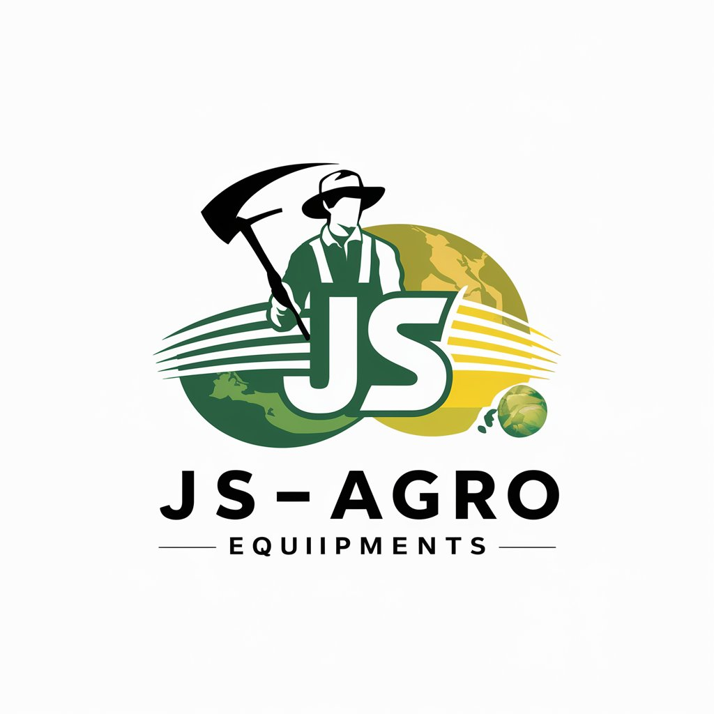

JS-Agro Equipments
Rakesh Penshia
Founded by Rakesh Painshia in 2020, JS-Agro Equipment is an innovative agriculture company based in Fatehabad. We specialize in creating advanced gadgets and tech products designed to enhance agricultural practices. Our mission is to provide high-quality, reliable equipment that boosts productivity and efficiency for farmers.At JS-Agro Equipment, we understand the challenges of modern farming and are dedicated to developing solutions that address these needs. Our products range from advanced machinery to state-of-the-art irrigation systems, all aimed at optimizing various farming processes. Our team of skilled professionals is passionate about agriculture and committed to providing exceptional service and support.
What We Do:
Products and Services
We provide a wide range of agriculture equipment, including tractors, harvesters, irrigation systems, and more. Our team works diligently to ensure each product meets the highest standards of performance and durability.
Collaborative Teamwork
At JS-Agro, we believe in the power of collaboration. Our team consists of skilled professionals dedicated to providing exceptional service and support to our customers.
Community Support
We are committed to giving back to the farming community. Through various initiatives and programs, we strive to support farmers and promote sustainable agricultural practices.
Team

Kuldeep
Import-Export and Management
Kuldeep, co-founder, manages import-export, ensuring efficient logistics. His leadership and expertise maintain a reliable supply chain, delivering products timely to farmers and upholding high standards.
Vipin
Customer Service and Accounts
Vipin, co-founder, oversees customer service and accounts. He ensures exceptional customer support and precise financial management, focusing on satisfaction and transparency, which are crucial to our company’s success.
eNinja
Head of Technology
eNinja, our skilled website designer, leads the tech department, ensuring a visually appealing and online presence. Their expertise in web development enhances user experience, supporting our mission to deliver advanced agricultural technology.
Our Mission
At JS-Agro Equipment, our mission is to provide the best and most affordable products to farmers worldwide. We are dedicated to innovating new products that help farmers, with a special focus on the needs of Indian farmers. Our goal is to enhance agricultural productivity and sustainability by delivering high-quality equipment that meets the diverse needs of modern farming.
Why Choose JS-Agro
-
Innovative Products:
We continuously innovate to bring the latest and most effective agricultural solutions to market.
-
Affordability:
Our products are designed to be cost-effective, ensuring that farmers can access high-quality equipment without breaking the bank.
-
Global Reach:
We serve farmers around the world, ensuring that our solutions are available wherever they are needed.
-
Focus on Indian Farmers:
We have a deep understanding of the challenges faced by Indian farmers and tailor our products to meet their specific needs.
-
Reliable Supply Chain:
With Kuldeep handling our import-export operations, we guarantee timely delivery and reliable supply of our products.